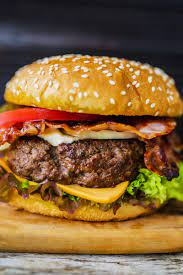
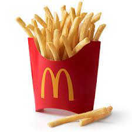
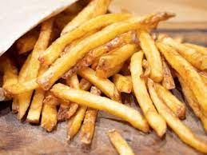
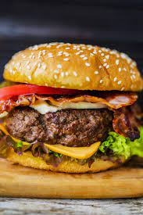
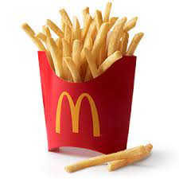
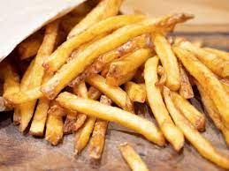

Fast Food Burger

Fresh Food Burger
Fast Food Fries
Fresh Food Fries
| The convenience of fast food vs healthy fresh food is a huge topic in today's world. Being healthy is a must in this time of our lives. Fast food might be easy and convenient but it is very unhealthy. Making your own meals saves money, makes it to your liking, and it also gives you more experience so to help you guys get started here are some fresh meals you can make similar to your favorite fast food meals commonly ordered. Be sure to look up recipes for each meal and read through the directions and ingredients first then follow along. This makes it easier to follow along without getting lost. |
Fast Food Burger
Fresh Food Burger
Fast Food Fries
Fresh Food Fries
